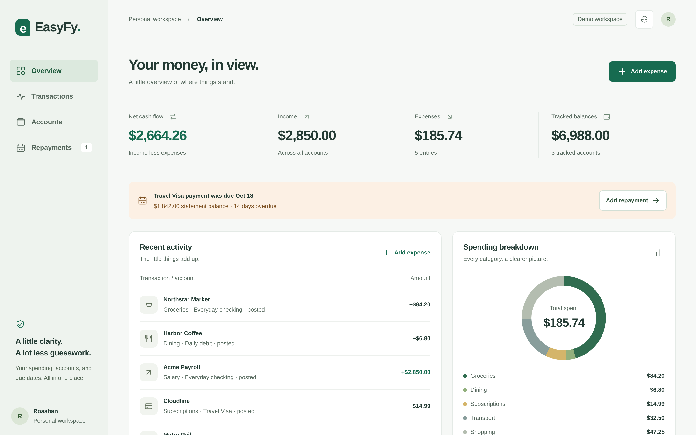
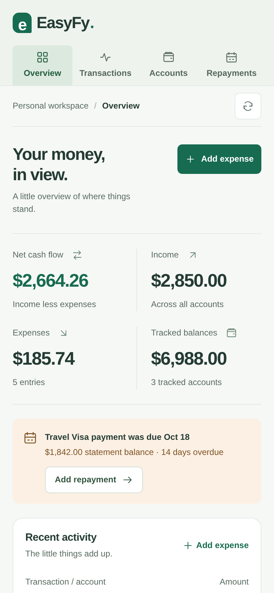

Featured project · In active development
EasyFy
A calm, privacy-first expense tracker for bank accounts, debit cards and credit-card repayments.
The problem
Spending is scattered across accounts and cards, and credit-card due dates are easy to miss. Most trackers either ask for bank logins or bury the essentials.
The approach
A zero-dependency Node.js API with a vanilla JS dashboard. One screen keeps spending, balances and the next repayment in view, using masked card details only.
- 0runtime dependencies
- ¢integer minor-unit money, no float errors
- 3responsive layouts: desktop, tablet, phone
- A11ykeyboard dialogs, reduced motion, ARIA
- Rejects raw card numbers, CVVs and PINs at the API boundary
- Strict security headers and a Content-Security-Policy
- Due-date tracking with overdue and urgent states
- Unit-tested with Node's built-in test runner